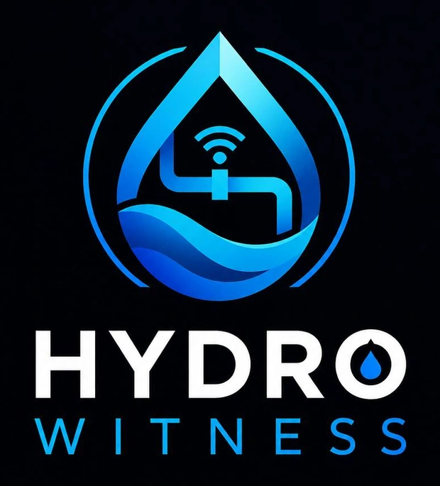

Static Head Labs.
We are a student team entering the Conrad Challenge 2026–27 in Cyber-Security and Technology. Static head is the pressure a tank's height gives a water system, and it is the number our clock starts from.

Five jobs, one goal.
A water system's safety net has to be understandable by the person standing next to the pump. We split the work so each part gets someone who cares about it.
- Full-stack software engineerThe engines, the server and the dashboard that ties them together.
- Frontend and systems engineerWhat operators see on screen, and how the software, the Witness Node and the plant data connect.
- HardwareThe Witness Node build and the pump tests.
- BusinessPricing, the first customers, and the finances.
- Design and communicationsThe logo and the story.
We would rather learn from an operator than guess.
If you run, work on or regulate a small water system, we want to hear what would make this useful and what would stop you.